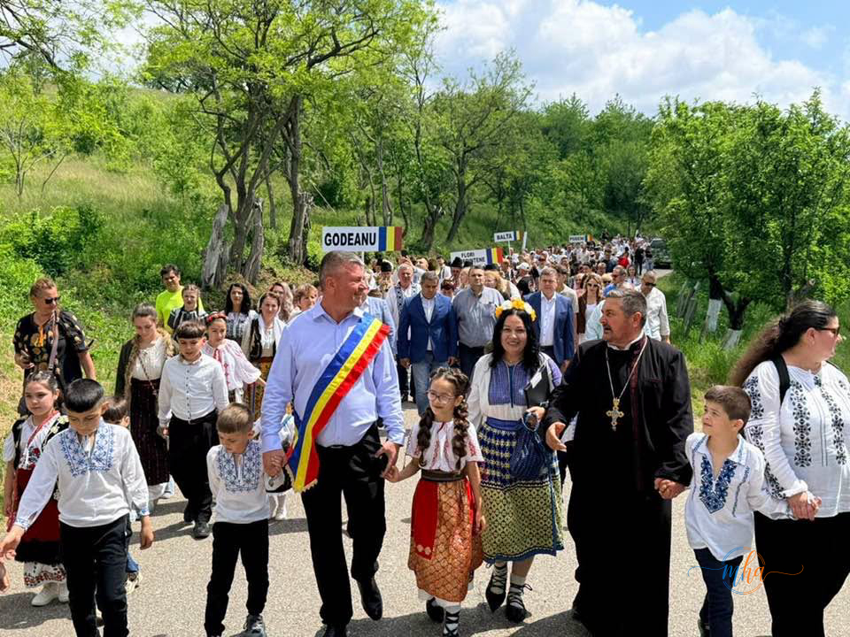
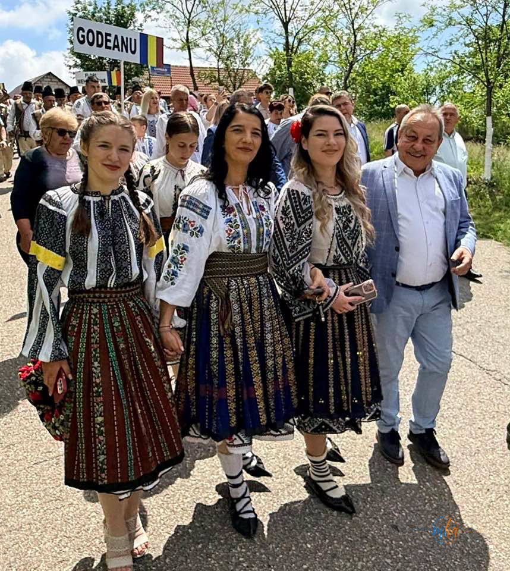
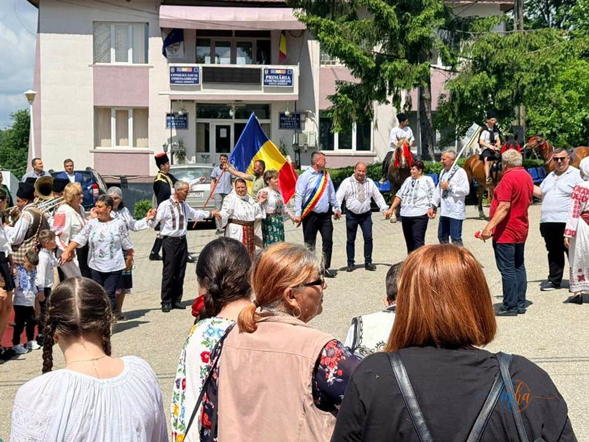
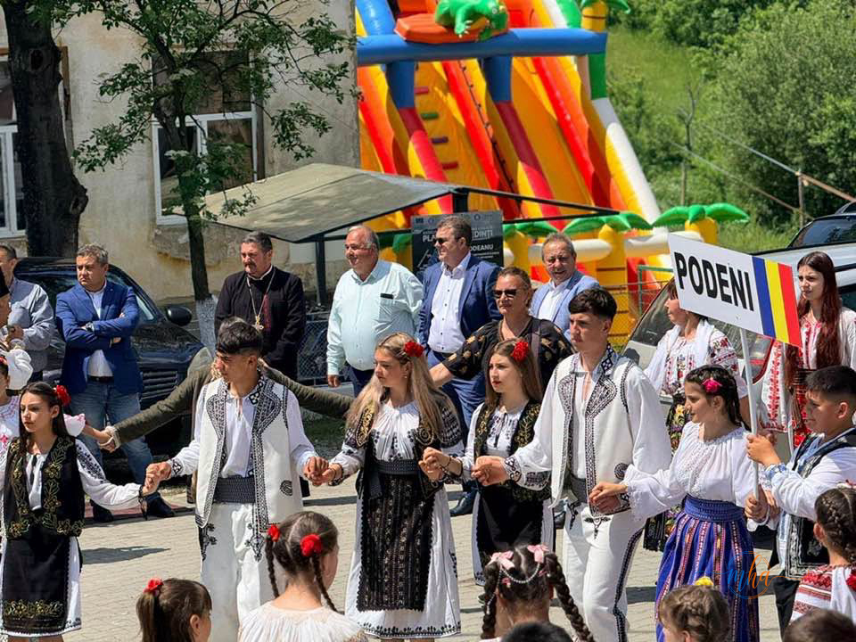
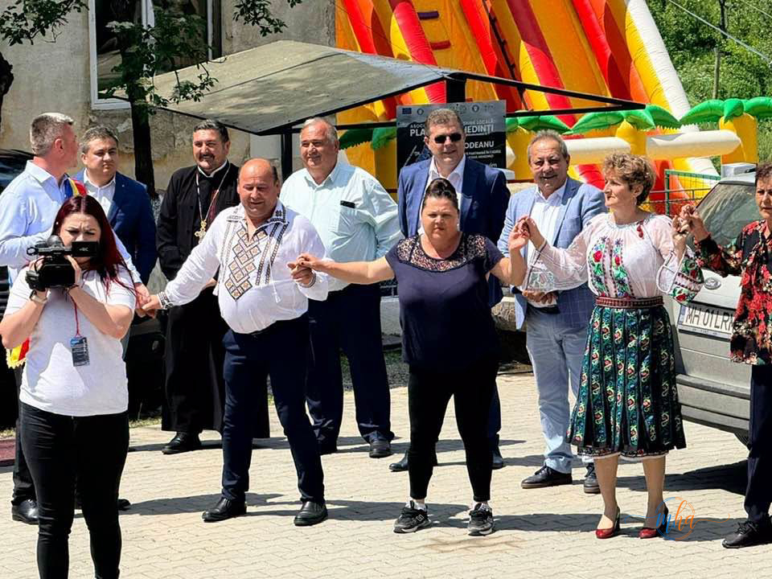

Comuna Godeanu a găzduit o nouă ediție a Zilelor Comunei, un eveniment care a reunit generații întregi în jurul valorilor și tradițiilor autentice ale zonei de nord a județului Mehedinți. Parada portului popular, hora satului și un program artistic de folclor au transformat Godeanu, pentru o zi, în inima identității românești din această parte a țării.
Paradă impresionantă — comune din nordul Mehedințiului, pe același drum
Evenimentul a debutat cu o impresionantă paradă a portului popular, în cadrul căreia elevi și tineri din mai multe comune ale zonei — Godeanu, Balta, Podeni și altele — au străbătut în coloană drumurile satului, purtând cu mândrie straiele populare moștenite de la bunici. Alături de ei au mărșăluit primarul comunei, preotul paroh și sute de localnici, transformând drumul într-un adevărat șuvoi de culoare și identitate românească.


A fost o imagine autentică a identității noastre românești, a respectului pentru rădăcini și a dragostei pentru valorile satului tradițional. Zona de nord a județului Mehedinți s-a dovedit, încă o dată, un loc în care tradițiile sunt păstrate cu o grijă aparte.
Hora satului — moment emoționant în fața Primăriei Godeanu
Parada s-a încheiat cu hora satului în fața Primăriei Godeanu, un moment emoționant care a adunat laolaltă întreaga comunitate. Tineri și vârstnici au dansat împreună, oficialii prezenți au intrat și ei în horă, iar atmosfera de sărbătoare a continuat cu un frumos program artistic de folclor, cu ansambluri și tineri interpreți îmbrăcați în costume tradiționale autentice.



Senatori, deputați și conducerea CJ Mehedinți, prezenți la eveniment
La eveniment au participat senatori și deputați din județul Mehedinți, printre care parlamentarii Liviu Mazilu și Alin Chirilă, președintele Consiliului Județean Mehedinți, vicepreședintele CJ Mehedinți, Ionică Negru, precum și mai mulți primari ai comunelor învecinate. Prezența conducerii județului la această sărbătoare de tradiție a subliniat importanța pe care oficialii mehedințeni o acordă păstrării identității culturale a zonei de nord.
Felicitări primarului Ionică Gheorgheci
Primarul comunei Godeanu, Ionică Gheorgheci, a fost felicitat de oficialii prezenți pentru organizarea exemplară a evenimentului și pentru eforturile constante de a păstra vie această sărbătoare în conștiința comunității — atât pentru cei mai vârstnici locuitori, cât și pentru tinerii care duc mai departe obiceiurile și valorile autentice ale zonei.
„Zilele Comunei Godeanu sunt dovada că în nordul Mehedințiului tradițiile trăiesc cu adevărat. Felicit primarul Ionică Gheorgheci pentru tot ceea ce face pentru această comunitate și pentru că păstrează vie flacăra identității noastre românești."
Zilele Comunei Godeanu rămân unul dintre cele mai frumoase evenimente de tradiție din nordul județului Mehedinți — un spațiu viu în care generațiile se întâlnesc, obiceiurile se transmit și identitatea locală este sărbătorită cu mândrie.